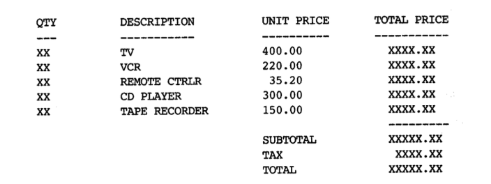

Lab 3 : Strings, Operators, & Expressions
Contents
Lab 3 : Strings, Operators, & Expressions#
Welcome to the second CSC 200 lab! This will will familiarize you with Strings, Operators, and Expressions, as well as give you some experience in their proper use. Be sure to read and follow all instructions unless otherwise specified. You’ll find the table of contents for this lab below.
Part 1. Strings#
One of the most useful data types supplied in the C++ libraries is the string. A string is a variable that stores a sequence of characters, such as “Hello” or “May 10th is my birthday!”. Just like the other data types, to create a string we first declare it, then we can store a value in it.
std::string testString;
testString = "This is a string.";
We can also combine these two statements into one line, if we know the value we wish to store at the time of the variable instantiation:
std::string testString = "This is a string.";
Often, we use strings as output, and cout works exactly like one would expect:
std::cout << testString << std::endl;
Which will print the same output as:
std::cout << "This is a string." << std::endl;
In order to use the string data type, the C++ string header <string> must be included at the top of the program. Thus, you would have the following #include at the top of your program in order to use the string type.
#include <string>
Let’s go into specifics about the string manipulations you’ll be doing the most.
Erase a part of string#
The C++ string library allows you to erase a part of a string using the erase()function. The function works differently according to the parameters passed.
erase()will erase the complete string.
erase(position)will delete all the characters after the specified index
erase(index, length)will delete the specified number (length) of characters after the specified index
Counting the number of characters in a string#
The length method returns the number of characters in a string, including spaces and punctuation. Like many of the string operations, length is a member function, and we invoke member functions using dot notation.
The string object that the function will act upon is to the left of the dot, the member function we are invoking is to the right, (e.g. str.length()). In such an expression, we are requesting the length from the variable str.
Searching within a string#
The string member function find is used to search within a string for a particular string or character. A sample usage such as str.find(key) searches the string object str for the value of key. The parameter key can either be a string or a character. (We say the find member function is overloaded to allow more than one usage). The return value is either the starting position where the key was found or the constant string::npos which indicates the key was not found.
Modifying a string by inserting and replacing#
Finally, let’s cover two other useful member functions that can modify a string object.
The first,
str1.insert(start, str2), inserts str2 at position start within str1, shifting the remaining characters of str1 over.The second,
str1.replace(start, length, str2), removes from str1 a total of length characters starting at the position start, replacing them with a copy of str2. It is important to note that these member functions do modify the string object they act upon.
Appending to a string#
C++ strings are wondrous things. Suppose you have two strings, s1 and s2 and you want to create a new string of their concatenation. Conveniently, you can just write s1 + s2 and you’ll get the result you’d expect. Similarly, if you want to append to the end of string, you can use the += operator. You can append either another string or a single character to the end of a string.
Converting Strings#
Sometimes we may need to convert the data in a string to a numerical data type (int, float, etc.) or vise versa.
The <string> library provides methods for these as well!
Take a look at the <string> library page this time to familiarize yourself with these functions They will come in extremely useful throughout the semester!
Part 2. Operators and Expressions#
As you know from your readings/videos, expressions perform a series of operations, and operators act upon variables & values. Without them, we wouldn’t be able to do very much programming.
While they are fairly simple to comprehend (= performs assignment, + performs addition, - performs subtraction, etc.) there are some nuances you should be aware of.
Much like how Mathematics has an order of operations (PEMDAS), so does programming! Each language defines their own operator precedence that dictates how an expression is evaluated.
Take a moment to view the C++ Operator Precedence table so that you better understand how expressions are evaluated. This will help you to not make mistakes, as well as assist in tracking down bugs in your calculations.
Part 3. Exercises#
std::string sentence = “C++ is a high-level x-oriented programming language that helps programmers write fast, yyytable programs”
Find the location of x (using
find()) in the sentenceDefine a new
stringobjectfill_xthat contains the string-literal"object". Use theinsert()function to replace the letter'x’ insentencewith the contents offill_x.After execution,
sentenceshould look like this:“C++ is a high-level object-oriented programming language that helps programmers write fast, yyytable programs”
Repeat the procedure to replace
"yyytable"with"portable".After execution,
sentenceshould look like this:"C++ is a high-level object-oriented programming language that helps programmers write fast, portable programs.”
Define another
stringobjectconcatthat contains the string-literal“C++ provides rich library support in the form of standard template library.”. Use the+operator to concatenate this string to the end ofsentence.Note: This will combine the strings, but there will be no space between them. How can we fix this?
Use the
erase()function to remove all commas fromsentence.Output the length of the final version of
sentence.
The company sells only five different products: TV, VCR, Remote Controller, CD Player and Tape Recorder. The unit prices are $400.00, $220.00, $35.20, $300.00, and $150.00, respectively. The program must read the quantity of each piece of equipment purchased from the keyboard. It then calculates the cost of each item, the subtotal, and the total cost after a 8.25% sales tax. The input data consist of a set of integers representing the quantities of each item sold. These integers must be input into the program in a user friendly way; that is, the program must prompt the user for each quantity as shown below. The numbers in boldface show the user’s answers.
How Many TVs Were Sold? 3
How Many VCRs Were Sold? 5
How Many Remote Controllers Were Sold? 1
How Many CDs Were Sold? 2
Haw Many Tape Recorders Were Sold? 4
The output should be neatly formatted, and look something like this:
Requirements#
Exercise 1 completed.
Exercise 2 completed.
Submission#
- To Receive Credit
Submit a compressed folder with all your files included within.
- Naming Conventions
Filename => ex#.cpp
Compressed => lastname_firstname_lab#
Note => compressed files end in .zip